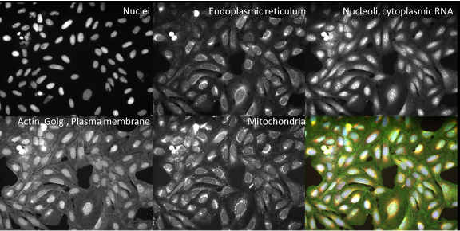
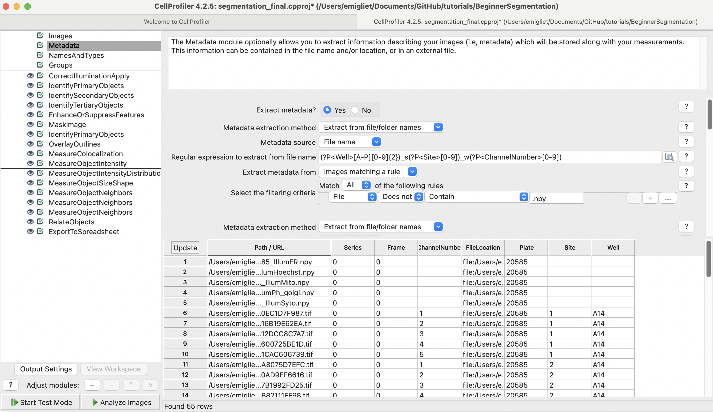
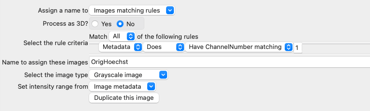
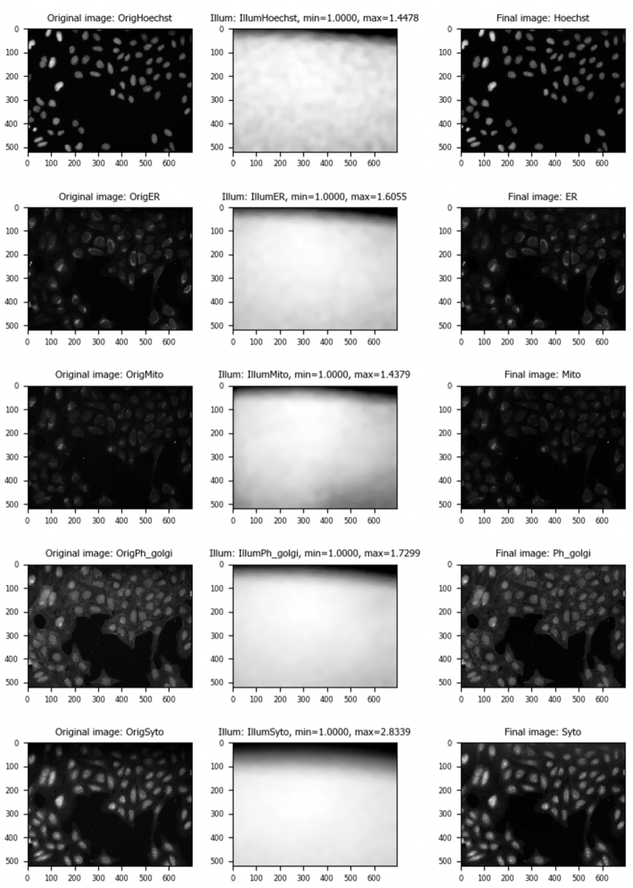
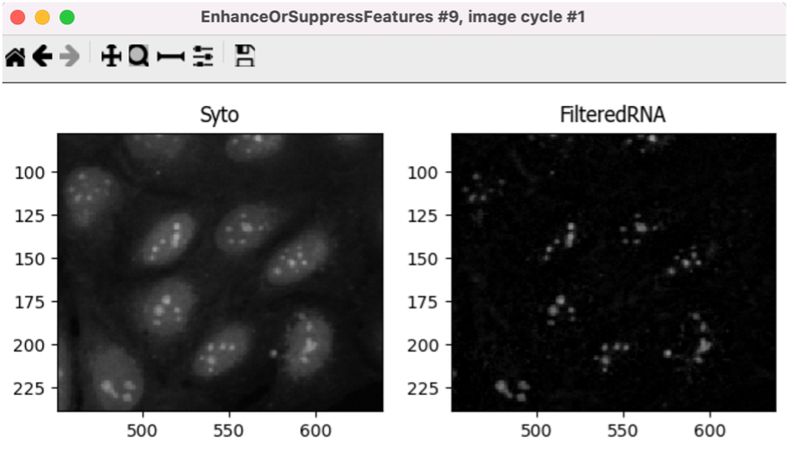
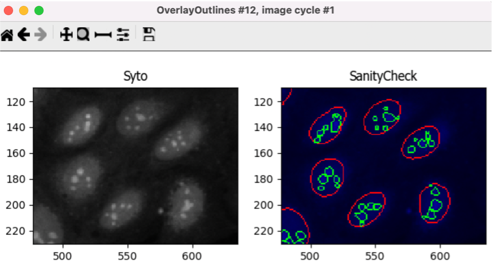

Segmentation and organelle
analysis:
A computer exercise using
CellProï¬ler
Beth Cimini,
Barbara Diaz-Rohrer and Rebecca Senft
Broad Institute
Background information:
The images in this experiment come from the Broad Bioimage
Benchmark Collection. They are ï¬elds of U2OS cells imaged in ï¬ve
channels (Cell Painting assay; see Gustafsdottir et al., 2013)

Figure 1: Images and channels from a Cell Painting
assay.
Goals of this exercise:
This exercise will give you practice ï¬nding segmentation parameters
for larger “parent” objects (nucleus, cell, and cytoplasm) and show you
ways to pull out smaller features in your image by segmenting organelles
within the cells and nuclei. You will also be shown how to use
RelateObjects so that you can relate the average counts, distances, and
measurements of the smaller “child” organelles to their larger “parent”
objects (i.e., cell and nucleus).
Materials necessary for this exercise:
The images are contained in the images folder; these
50 images (10 sites imaged in 5 channels) represent 5 mock treated wells
from a single 384 well plate experiment.
Exercise instructions:
Read through the steps below and follow instructions where stated.
Steps where you must figure out a solution are marked with 🔴 TO
DO.
1. Load starting pipeline (2 min)
- Start CellProï¬ler by double-clicking the desktop icon:

- Drag and drop the ‘segmentation_start.cppipe’ ï¬le into the ‘Analysis
modules’ pane on the left.
- 2 modules should pop up.
2. Set up the input modules (10min)
The four input modules (Images, Metadata, NamesAndTypes, and Groups)
are crucial for any CellProfiler pipeline because they define how images
are loaded and organized in CellProfiler.
- Click on the ‘Images’ module in the top left corner of the
CellProfiler window.
- Drag and drop the ‘images’ folder into the ‘Drop files and folders
here’ pane. It should automatically populate. Notice that illumination
correction images (with a file extension of ‘.npy’) are included in this
data set.
- Notice that if the ‘Filter images?’ is set to ‘Images only’ the
‘.npy’ files appeared grey out.

Figure 2: The Images module, grey out files will not be available
for downstream modules
- ** 🔴 TO DO*: Change the filter to a custom filter
toinclude* the ‘.npy’ files.
- In the ‘Metadata’ module three metadata extraction methods should
already be present and configured:
- The ï¬rst pulls Well, Site, and Channel metadata from all the image
ï¬les except for the illumination correction functions.
- The second pulls Plate metadata from the image folder.
- The third pulls Plate metadata from the illumination correction
functions.
- Click on the magnifying glass at the end of the regular expression
box for each extraction method to see how it works.
- Return to the ‘Metadata’ module and press ‘Update’. You should now
see several columns, look through them you should have 5 different
channel numbers, 1 plate, 2 sites and 5 different wells.

Figure 3: The Metadata module, columns in table correspond to
metadata categories
- In the ‘NamesAndTypes’ module, we assign names to the images and
configure image sets (i.e., all the different channels for a field of
view). The channel mapping here is a bit complicated – we have a single
set of illumination correction images (one ‘.npy’ file per channel) that
map to each and every well and site. We will use the metadata we
extracted in the previous module to make that association possible.
- The ‘NamesAndTypes’ module is fully configured already but scroll
and look through the configuration to see the two different ways of
mapping images to channel names that are demonstrated here. (There are
several other ways to create correct mappings, but these may serve as a
helpful example to refer to in your own work).
- The ‘.tif’ image ï¬les are assigned a name by the Metadata extracted
in the previous module (speciï¬cally ChannelNumber)

Figure 4: Image mapping using extracted metadata
- The ‘.npy’ illumination correction functions are assigned a name
based on a unique string in the filename (such as ‘IllumER’)

Figure 5: Image mapping using filename
- As there is only one set of illumination correction functions for
each entire plate, the image sets cannot simply be constructed by using
‘Image set matching’ as ‘Order’.
- Scroll to the bottom of the ‘NamesAndTypes’ to see how the image
sets are constructed ‘Image set matching’ is set to ‘Metadata’
- Each image channel is set to ‘Plate → Well → Site’.
- Each illumination correction function is set to ‘Plate → (None) →
(None)’

Figure 6: Image set matching using extracted metadata
- For this exercise the ‘Groups’ module is not needed so it is set to
‘No’, this module can be useful when you have more than one plate, or
different movies.
- For more information and examples on how to configure the Input
modules we have created a blog and video tutorial that can be accessed
here: https://carpenter-singh-lab.broadinstitute.org/blog/input-modules-tutorial.
3. Examine the output of the CorrectIlluminationApply module.
(2min)
Since microscope objectives don’t typically have a completely uniform
illumination pattern, applying an illumination correction function can
help improve our segmentation and measurements by compensating for this.
Pay close attention to the top of the field of view to see the greatest
effect of correction.
- Enter test mode by clicking on the ‘Start Test Mode’ button at the
bottom left corner of the window and hit ‘Step’ to run the
CorrectIlluminationApply module.
- Briefly examine the output of the CorrectIlluminationApply module—you
can see that the illumination correction functions show uneven
illumination across the ï¬eld of view.
- These functions were created by averaging and smoothing all 3456
images from this plate, so dim areas in the illumination correction
function are areas of the field of view that are consistently dimmer
across many images.
- Also note that while the illumination correction functions for each
channel are similar, they aren’t identical; each channel in your own
experiments should therefore be illumination corrected
independently.

Figure 7: Application of the illumination correction
function
4. IdentifyPrimaryObjects – Nuclei (10min)
Next, we’ll take a ï¬rst pass at identifying nuclei and cells in our
initial image.
- After the CorrectIlluminationApply module, add an
IdentifyPrimaryObjects module (from the ‘Object Processing’ module
category). Do this by clicking on the ‘+’ sign in the bottom left corner
of the CellProfiler window, which will pop up a small window called ‘Add
modules.’.
- Tip: You can also use the search bar at the top of the ‘Add modules’
window to search all modules by name.

Figure 8: The Add modules window, modules are divided in
categories based on their function
- Create objects called Nuclei by segmenting on the Hoechst channel.
- Select ‘Hoechst’ image as your input image from the drop-down
menu.
- Change the name of the output objects to ‘Nuclei’.
- Hit’ Step’ to run the module. How does your segmentation look?
- On the outlines display pane (bottom left) you can see three
different colors; green is for accepted objects, orange for objects
touching the border, and pink for objects outside the diameter
range.
- On the table pane (bottom right) there is useful information that
you can use to adjust your segmentation settings, like the median
diameter, and the threshold.

Figure 9: The IdentifyPrimaryObjects module output, you can use
the information in this window to modify your segmentation
parameters
- Use the magnifying glass at the top of the window to zoom in on an
area that was segmented poorly.
- 🔴 TO DO: Improve your segmentation of nuclei:
- Select ‘Yes’ for the ‘Use advanced settings?’ option, then change
some of the parameters:
- Adjust the threshold method, may lead to better (or worse!)
results.
- Adjust the declumping settings.
- Hit ‘Step’ to rerun and see how the changes affect the
segmentation.
- Adjust the segmentation parameters until you feel you’re ready to
move on to identifying the cells around the nuclei; the identification
should be good but doesn’t need to be perfect before you move on.
- IdentifySecondaryObjects – Cells (5min)
- After the IdentifyPrimaryObjects, add an IdentifySecondaryObjects
module.
- Create an object called Cells that is seeded on the Nuclei primary
objects that you just created; select the Ph_golgi image for your input
image, nuclei for input objects and change the name to ‘Cells’.
- Hit’ Step’ to run the module. How does your segmentation look?
- For this module the outline colors correspond to the object seed
(green-nuclei) and the segmented objects (pink-cell)

Figure 10: The IdentifySecondaryObjects module output
- 🔴 TO DO: Improve cell segmentation
- Examine the segmentation and adjust the segmentation parameters
until you feel you’re ready to test them on another image; they don’t
need to be perfect.
- Adjust the threshold method.
- Test the effects of using the various methods for identifying
secondary objects (Propagation, Watershed-Image, Distance-N, etc) and,
if using Propagation, the regularization factor.
6. Test the robustness of your segmentation parameters across
images (5min)
It’s (relatively!) easy to come up with a good set of segmentation
parameters for a single image however we aim to create a set of
parameters that can segment cells on all the images on an
experiment.
- To test the parameters, there are two options to change the image
you are working on in Test Mode
- Click on the ‘Next Image Set’ at the bottom left corner, or
- Go to ‘Test’ on the top menu bar → Choose Image Set to bring up a
list of the images in your experiment, select the image you want to
test, and press the ‘OK’ button.
- Tip: you can also use the Test menu to choose a random image
set

Figure 11: A section of the ‘Choose Image Set’ menu.
- Then run that image in test mode for your ï¬rst 3 modules (through
your IdentifySecondaryObjects step).
- You can do it by clicking the step button, or
- You can add a pause button on the module after
IdentifySecondaryObjects and hit ‘Run’, this will run all modules before
the pause.

Figure 12: A section of the ‘Analysis modules’ pane.
- Examine the output – did your nuclear and cellular segmentation hold
up compared to the ï¬rst images you looked at?
- 🔴 TO DO: Adjust the parameters to get comparable
results to the first image. Once your segmentation is good, try it on
another image.
7. IdentifyTertiaryObjects- Cytoplasm (2min)
- After the IdentifySecondaryObjects module, add an
IdentifyTertiaryObjects module.
- Create an object called Cytoplasm using the Cell and Nuclei objects
you’ve created.
- Select the larger and smaller identified objects from the drop-down
menu.
- Change the name of the objects to be identified.
- ‘Shrink smaller object prior to subtraction?’ should both set to
‘No’.
8. Examine the steps used to segment the Nucleoli
(15min)
So far, we have used untransformed images for object detection, but
not all objects can be segmented from raw images. CellProfiler contains
a variety of image processing modules that can aid segmentation. For
this exercise, we will use two such modules, but there are other ones
you can explore.
The next 3 modules have to do with the creation of the Nucleoli
objects. Look at the output from each to see how the image is
transformed to aid in segmentation.
After the IdentifyTertiaryObjects module, add an
EnhanceOrSuppressFeatures module.
EnhanceOrSuppressFeatures is a module that helps enhance parts of
an image- in this case, punctate objects or ‘Speckles’. As we are
looking for nucleoli, we apply this to the RNA channel (Syto) image and
call the output ‘FilteredRNA’.
🔴 TO DO: Enhance nucleoli spots
- Change the input image from the drop-down menu to ‘Syto’
- Change the name of the output image to ‘FilteredRNA’
- Change the feature size to see how this affects the output and find
a value that works well.
- See below for an example of results to aim for:

Figure 13. The EnhanceOrSuppress module output, enhancing the
Syto image allows you to isolate nucleoli against the nucleoplasmic
background signal.
After the EnhanceOrSuppressFeatures module, add an MaskImage
module.
MaskImage allows you to create a version of the ‘FilteredRNA’
image called ‘SytoNuclei’ where all the pixels except the ones you
specify are set to an intensity of 0. In this case, we set to 0 any
pixel not inside a nucleus. By doing this, we can decrease the
likelihood of detecting cytoplasmic RNA dots.
🔴 TO DO: Mask the RNA image to show only the
‘Nuclei’
- Change the input image from the drop-down menu to ‘FilteredRNA’
- Change the name of the output image to ‘SytoNuclei’
- Use the objects ‘Nuclei’ as the mask.
- See below for an example of results to aim for:

Figure 14. The MaskImage module output, the contrast was adjusted
to show that the intensity of the pixels outside the nuclei are now set
to 0.
IdentifyPrimaryObjects is used to ï¬nd the Nucleoli. This is a
Primary object segmentation because we are not using another object as a
seed (i.e., starting point), and are only segmenting based off the
intensity in our ‘SytoNuclei’ image.
🔴 TO DO: Segment nucleoli
- Change the input image from the drop-down menu to ‘SytoNuclei’
- Change the name of the objects to ‘Nucleoli’
- Adjust the segmentation parameters until you are satisfied with the
segmentation results.
🔴 TO DO: Add an ‘OverlayOutlines’ module at this
point to overlay the identified nucleoli on the original Syto image to
assure yourself that the segmentation not only matches the speckle
enhanced ‘SytoNuclei’ image, but also looks accurate on the unprocessed
image as well. This is not strictly necessary but can be a nice “sanity
check”.
- Goal: display outlines of your nucleoli and your nuclei on the
unprocessed ‘Syto’ image.
- Here’s an example of what that could look like (red=nuclei,
green=nucleoli):
- Tip: you can use a similar strategy to segment mitochondria using
the ‘Mito’ channel

Figure 15. The OverlayOutlines module output, all detected
nucleoli are within the nuclei.
9. 🔴 TO DO: Add measurement modules to your pipeline
(10min)
- After your segmentation of the nucleoli, add as many object
measurement modules as you would like, we have added a
MeasureObjectIntensity.
- Some suggested modules to add: MeasureObjectSizeShape,
MeasureObjectIntensity, MeasureGranularity, MeasureObjectNeighbors.
- Which objects do you think would be valuable to measure with each of
these modules? Which channels would you measure your objects in? For a
typical Cell Painting experiment you would add as many measurements as
possible, but that isn’t necessary here; however, do make sure every
object gets at least some measurements.Note: While MeasureCorrelation,
MeasureTexture, and MeasureObjectIntensityDistribution can produce
valuable data for downstream profiling, they can be memory-intensive
and/or slow so should not be added for this example pipeline in the
interest of pipeline runtime.
10. RelateObjects (5min)
- 🔴 TO DO: Add a RelateObjects module and configure
it to relate ‘Nucleoli’ to ‘Nuclei’.

Figure 16: The RelateObject module output.
Relating the objects allows you to create per-parent means (e.g., for
this cell, what is the average size of an individual mitochondrion) and
calculate distances from the child objects to the edge and/or the center
of the parent (e.g., how far is each nucleolus from the center of the
nucleus).
11. Run the pipeline (optional)
- If you have time, add a ExportToSpreadsheet module at the end.
- Exit test mode.
- Click on ‘Output Settings’ button at the bottom left corner.
- Change the default output folder.
- Click on ‘Analyze Images’ button at the bottom left corner.
- Explore the spreadsheets created for each object.